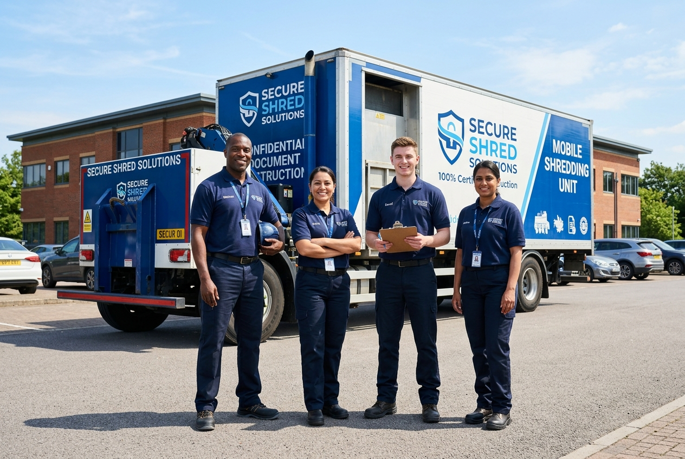

Who We Are
Protecting Data Since 2012
VaultShred was founded with a simple mission: make secure document destruction accessible, affordable, and environmentally responsible for businesses of all sizes.
Starting with a single shredding truck and a commitment to excellence, we've grown into a leading document destruction company serving over 5,000 businesses nationwide. Our NAID AAA certification and spotless compliance record reflect our dedication to the highest security standards.
0
Years Experience
0
Businesses Served